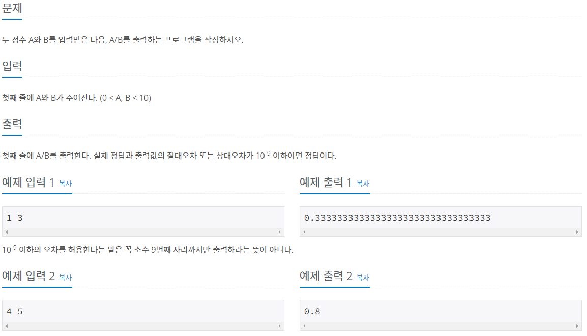

#INFO
난이도 : BRONZE4

#SOLVE
부동소수점과 정밀도(Precision)에 대한 개념을 알고 있는지 확인하는 문제였다.
C/C++은 실수를 표현할 때 부동소수점 자료형인 float과 double을 사용한다. 고정소수점 방식은 부동소수점 방식에 비해 제약이 많기에 사용되지 않는다.
따라서 C/C++에서 실수를 표기할 때 어느정도 한계가 있다. float은 소수점 아래 신뢰 가능 정도는 6자리 double은 소수점 아래 신뢰 가능 정도가 14자리 정도이다.
아래는 printf 함수의 형식 지정자를 이용해 소수점 아래 20자리 까지 출력한 예제이다. 그냥 %lf를 하면 소수점 자릿수가 6자리로 고정되지만, %.nlf를 하면 소수점 자리수가 n자리로 고정된다.
int main() {
float f = 3.14f;
double d = 3.14;
printf("%.20lf\n", f);
printf("%.20lf", d);
return 0;
}3.14000010490417480469
3.14000000000000012434따라서 BOJ 1008 A/B 문제를 풀이할 때 유의할 점은 다음과 같다. 실제 정답과 출력값의 절대오차 또는 상대오차가 10-9 이하 이어야 하기에, float 형이 아닌 double 형을 사용 해야만 한다.
그리고 소수점 자리수를 고정해 주기 위해서 printf의 형식 지정자를 이용하거나, cout의 멤버인 precision 함수를 이용할 수 도 있다.
#CODE_형식지정자
#include <bits/stdc++.h>
using namespace std;
int main() {
double A, B;
scanf("%lf %lf",&A, &B);
// 소수점 아래 9자리 까지 출력
printf("%.9lf\n", A/B);
return 0;
}
#CODE_precision
#include <bits/stdc++.h>
using namespace std;
int main() {
ios::sync_with_stdio(0);
cin.tie(0);
double A, B;
cin >> A >> B;
// 소수점 아래 15자리 까지 출력
cout.precision(15);
cout << A / B << endl;
return 0;
}